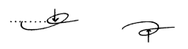
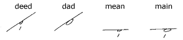

| Home Reporting A Judge’s Charge Dupraw’s Notes Sklarew’s Notes Zoubek’s Notes Pre-Anniversary Description Reference Material Brief Form List Anniversary Description Reading Material Reference Material Brief Form List Most-Used Phrases Simplified Description Brief Form List Dupraw on Note Size Diamond Jubilee Description Brief Form List Expert Brief Form List Series 90 Description Brief Form List Centennial Description Brief Form List Taquigrafía Gregg Gramálogos German Gregg Manual Esperanto Gregg Manual Brief Forms Irish Gregg Manual Gregg Group Gregg Learning Forum Ms. Letha’s SH Site Shorthand³ Omniglot's Entry Wikipedia's Entry Stenospeed Dictation Practice Andrew Owen |
Unit 2 14. Circles Between Strokes. Where an angle, or a point, is formed at the junction of consonants, the circle goes outside the angle. Observe how the circle joins the strokes in r-a-n and k-a-n:  The straight line begins in the circle, as indicated by the arrows. The dotted line shows the position of the circle in relation to the other strokes. If the page is turned upside down, the word ran will become the word knack. To accommodate the circle in these joinings, the n and the m are written slightly longer than they would normally be written. The arrow shows how the n is extended in the word nail. The dotted line indicates the position of the circle in relation to the other strokes. 15. Where straight strokes and curves join without an angle, or where two similar-motion curves join without an angle, the circle is placed inside the curve. Observe how the circle joins the strokes in r-a-t and t-a-k: In joinings of this type, the blending of the curve with the straight line should be so smooth that the circle appears to have been inserted afterward. The dotted line shows the position of the circle in relation to the other strokes. Practice with the following sentences: Key: Take the lad to the deck. He is late. The red tag and ticket were at the gate. 16. Some vowels are so obscure or neutral that they are omitted when they do not contribute to speed or legibility. For example, the e in the words taken and maker is absolutely useless, and is omitted. Any vowel which does not contribute to the legibility of an outline may be omitted. Any vowel which does not contribute to the legibility of and outline may be omitted if its omission gives a more facile outline. 17. Between straight strokes in the same direction the circle is written with right motion. See the following outlines of m-a-m and d-e-d:
The joining should be so smooth and snug that, if the circle were eliminated, the two straight lines would blend into one stroke. Avoid forming points on the circles in the places indicated by the arrows.  18. Between opposite curves the circle is turned back on the first curve. Observe the outlines of g-a-l and l-a-g: If the circle were erased, the curves should blend into a continuous stroke. Avoid forming points on the circles in the places indicated by the arrows. Consonant Combinations 19. Kr and Gl Combinations. K and r, and g and l, are equal curves and are made a little flatter than usual when joined, as the following outlines k-r, g-l, and r-k demonstrate: In these combinations, the curves are rather shallow. They have a wavelike appearance and are very fluent. Kr (or rk) is slightly shorter than the combined length of r and k when standing alone. The same is true of gl (or lg). 20. Gr and Kl Combinations. Where curves of unequal length join without an angle, as in the following, note how a distinction in length is positively shown in the following outlines, g-r and k-l. 21. Rk and Lk Combinations. Since r and k are of equal length, the curves are somewhat flatter, as with kr and gl. Lk is very infrequent. 22. The Signs for Th. The sign for t is curved to express th, thus:
As seen in earlier examples, these letters are very small—only about a third of the space between the writing lines. The curve on the left starts outward at the beginning. Consequently, the curve is deep at the beginning and flattens out toward the end. The curve on the right starts on the right then swings upward. There should be no hook at the beginning or the end. The dotted line shows the slant of the strokes. Note the similarity between these curves and their parent stroke, the t. Brief Forms for Common Words 23.
A comparatively small number of frequently recurring words make
up a large part of the English language. As an illustration,
ten words—the, of and, to, a, in, that, it, is, I—form
one-fourth of the entire written and spoken language.
*In some phrases they
is written the same as the, as in they will. 25. Reading and Dictation Practice |


|
Preface About Gregg Shorthand Editor's Note A Talk with the Beginner The Alphabet Chapter I Unit 1 Unit 2 Unit 3 Chapter II Unit 4 Unit 5 Unit 6 Chapter III Unit 7 Unit 8 Unit 9 Chapter IV Unit 10 Unit 11 Unit 12 Chapter V Unit 13 Unit 14 Unit 15 Chapter VI Unit 16 Unit 17 Unit 18 Chapter VII /n Unit 19 /n Unit 20 Unit 21 Chapter VIII Unit 22 Unit 23 Unit 24 Chapter IX Unit 25 Unit 26 Unit 27 Chapter X Unit 28 Unit 29 Unit 30 Chapter XI Unit 31 Unit 32 Unit 33 Chapter XII Unit 34 Unit 35 Unit 36 |